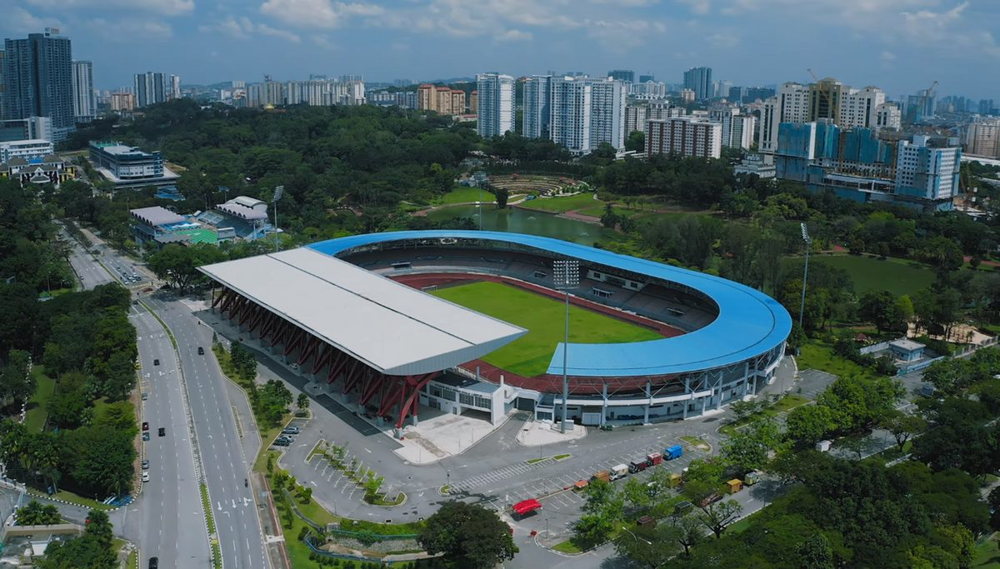

Хет-трик Гангте принёс сборной Индии U17 волевую победу над Сингапуром — 4:2
Капитан забил три мяча в Куала-Лумпуре, и Индия отыгралась в стартовом матче группы E отбора на Кубок Азии U17 2027 года.

Что произошло
В среду, 11 ноября 2026 года, сборная Индии U17 на стадионе «Куала-Лумпур» отыгралась и обыграла Сингапур со счётом 4:2 в первом матче группы E отборочного турнира Кубка Азии U17 2027 года. Хет-трик оформил капитан Даллалмуон Гангте.
На 27-й минуте Сингапур повёл в счёте: Иззан Фарид воспользовался запоздалым выносом и забил с близкого расстояния. Через две минуты Гангте сравнял счёт — после навеса Сайлекса Ойнама он развернулся с защитником и низом пробил левой ногой в ближний угол. Первый тайм завершился со счётом 1:1.

На 61-й минуте Гангте вывел Индию вперёд с пенальти, назначенного за фол на Хришикеше Чаране Манаватхи. Через четыре минуты Фарид головой после углового снова сравнял счёт. На 82-й минуте Гангте завершил хет-трик, добив мяч после того, как вратарь Илхан Резал отразил удар вышедшего на замену Дэвида Мангана Ирома. Ещё один игрок замены, Ристик Маити, на 88-й минуте установил окончательный счёт 4:2, отправив отскочивший мяч в пустые ворота.
Почему это важно
Из группы E, в которой пять команд, в финальный турнир в Узбекистане (12–29 мая 2027 года) выходит только победитель, так что права на потерю очков почти нет. В другом матче Палестина обыграла Гуам 5:0 и после первого тура возглавляет группу по разнице мячей. Сборная Индии под руководством Мехраджуддина Ваду стремится попасть в финальный турнир второй раз подряд: путёвку на турнир 2026 года она завоевала в ноябре 2025 года, обыграв Иран 2:1 в Ахмадабаде.
Ключевые факты
- Счёт: Сингапур — Индия 2:4 (первый тайм 1:1).
- Голы Индии: Гангте 29', 61' (пенальти), 82'; Маити 88'.
- Голы Сингапура: Иззан Фарид 27', 65'.
- Стадион: «Куала-Лумпур», Малайзия.
Что дальше
Индия сыграет с Гуамом 14 ноября, с Палестиной 17 ноября и с хозяевами турнира, сборной Малайзии, 20 ноября. Матч с Палестиной, вероятно, решит судьбу первого места в группе. Все матчи сборной Индии транслируются на YouTube-канале FAMTV Malaysia.